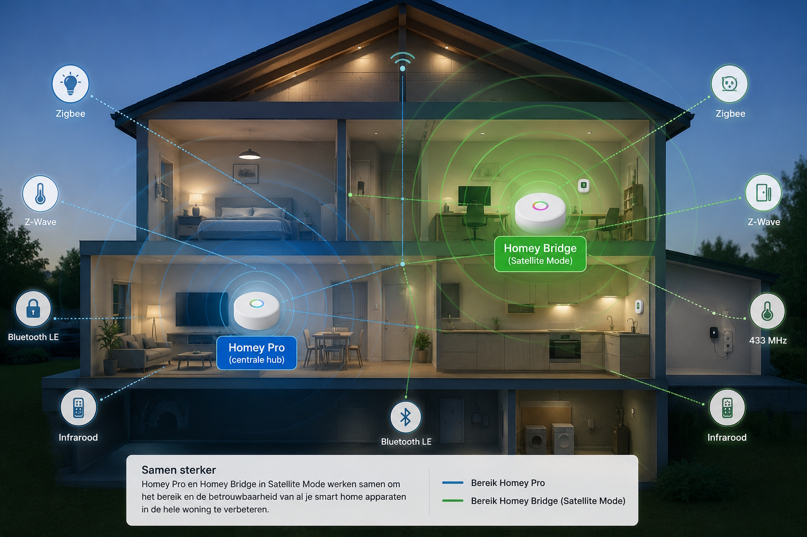

Homey blijft zich in rap tempo ontwikkelen en daardoor verschijnen er steeds meer functies en mogelijkheden binnen het ecosysteem. Twee termen die regelmatig terugkomen zijn Homey Bridge Satellite Mode en HomeyLink. Vooral op forums en Reddit worden deze functies vaak door elkaar gehaald.
Dat is ergens ook begrijpelijk. Beide oplossingen hebben namelijk iets te maken met meerdere Homey-apparaten. Toch lossen ze compleet verschillende problemen op. Waar Satellite Mode draait om bereik en draadloze protocollen, richt HomeyLink zich juist op het koppelen van meerdere Homey-omgevingen.
Kort samengevat
Satellite Mode gebruik je om het bereik van je Homey Pro uit te breiden binnen één woning. HomeyLink gebruik je juist om meerdere Homey-systemen met elkaar te verbinden.
Wat is Homey Bridge Satellite Mode?
Met Satellite Mode verander je een Homey Bridge van zelfstandige cloud-hub naar een uitbreiding van je Homey Pro. De Bridge werkt dan als extra antenne voor bepaalde draadloze protocollen in huis.
Vooral in grotere woningen kan dit enorm handig zijn. Denk bijvoorbeeld aan een televisie op zolder die je via infrarood wilt bedienen, een 433 MHz-sensor in de schuur of Bluetooth-apparaten die nét buiten bereik van je Homey Pro vallen.
- 433 MHz & infrarood → Apparaten gebruiken automatisch de dichtstbijzijnde Homey Bridge of Homey Pro.
- Zigbee & Z-Wave → De Bridge helpt mee binnen het bestaande mesh-netwerk.
- Bluetooth LE → Het bereik naar Bluetooth-apparaten kan verbeteren door Bridges slim te plaatsen.
Wil je precies zien hoe Satellite Mode ingesteld wordt? Bekijk dan ook de officiële uitleg van Homey: Set up Satellite Mode for Homey Pro .

Wat is HomeyLink dan precies?
HomeyLink werkt totaal anders. Dit is namelijk geen draadloze uitbreiding van je Homey Pro, maar een koppeling tussen meerdere Homey-systemen.
Dankzij HomeyLink kun je apparaten van de ene Homey zichtbaar maken op een andere Homey-installatie. Handig wanneer je bijvoorbeeld een tweede woning hebt, experimenteert met een extra Homey Pro of meerdere locaties centraal wilt beheren.
HomeyLink draait dus vooral om flexibiliteit tussen verschillende Homey-omgevingen en niet om beter bereik van Zigbee, Z-Wave of infrarood.
Meer informatie over HomeyLink en de officiële app vind je hier: HomeyLink op Homey.app
Wanneer gebruik je welke oplossing?
Heb je één woning en wil je vooral beter bereik voor draadloze protocollen? Dan is Satellite Mode vrijwel altijd de beste keuze. Zeker bij grotere woningen, meerdere verdiepingen of apparaten op lastig bereikbare plekken merk je snel het verschil.
Gebruik je juist meerdere Homey-installaties? Bijvoorbeeld een woning, vakantiehuis of aparte testomgeving? Dan is HomeyLink logischer omdat je apparaten en flows tussen die systemen kunt koppelen.
Waar moet je op letten?
Vooral rondom Zigbee en Z-Wave bestaan veel misverstanden. Sommige gebruikers verwachten dat Satellite Mode hetzelfde werkt als een wifi-access point, maar zo eenvoudig ligt het helaas niet.
- Satellite Mode werkt vooral goed binnen één logisch mesh-netwerk.
- Een extra Homey Bridge vervangt geen goed Zigbee-mesh met voldoende routers of repeaters.
- Niet iedere app of integratie ondersteunt automatisch alle functies van Satellite Mode.
In de praktijk blijft een stabiel mesh-netwerk ontzettend belangrijk. Slimme stekkers, vaste Zigbee-apparaten en repeaters hebben vaak nog meer invloed op stabiliteit dan simpelweg een extra Bridge toevoegen.
Waarom raken veel gebruikers in de war?
De verwarring ontstaat vooral doordat beide functies werken met meerdere Homey-apparaten. De namen lijken op elkaar, maar de toepassingen verschillen fundamenteel.
Zo installeren sommige gebruikers HomeyLink terwijl ze eigenlijk alleen het bereik van hun Homey Pro wilden verbeteren. Andersom verwachten anderen juist dat Satellite Mode meerdere Homey-installaties met elkaar synchroniseert. Dat is dus niet het geval.
Het helpt ook niet mee dat Homey ondertussen behoorlijk uitgebreid is geworden. Waar vroeger vooral één centrale hub gebruikelijk was, bouwen steeds meer gebruikers complete Smart Home ecosystemen met meerdere Bridges, protocollen en locaties.
Volgende stap
Wil je meer halen uit je Homey setup? Dan zijn dit logische vervolgstappen:
- Lees meer over de verschillen tussen Homey Pro en Homey Bridge.
- Bekijk hoe je Homey combineert met Homeyduino en DIY-sensoren.
Conclusie
Hoewel Homey Bridge Satellite Mode en HomeyLink qua naam sterk op elkaar lijken, hebben ze compleet verschillende doelen. Satellite Mode draait om bereik, protocollen en stabiliteit binnen één woning. HomeyLink richt zich juist op het koppelen van meerdere Homey-systemen.
Begrijp je dit verschil eenmaal goed, dan voorkom je veel frustratie én haal je aanzienlijk meer uit je Smart Home setup. Zeker in grotere woningen of complexere Homey-installaties maakt de juiste keuze uiteindelijk een wereld van verschil.